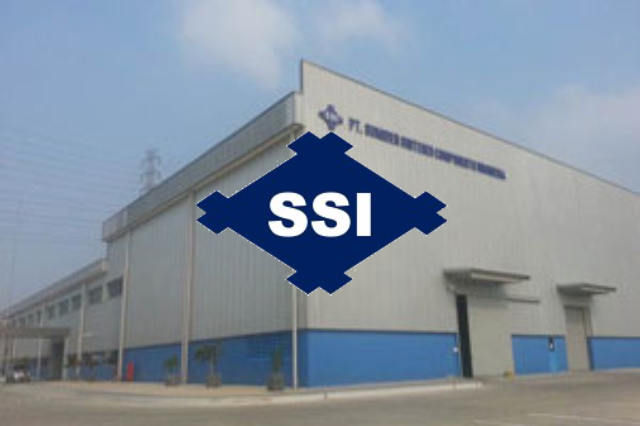

Profil SSI

SUMIDEN SINTERED COMPONENT INDONESIA Incorporated in 2012, PT. Sumiden Sintered Components Indonesia (SSI) is a manufacturer of automotive component, located at Delta Silicon Industrial Park, Bekasi, Indonesia. SSI is one of the group companies of Sumitomo Electric Industries, Ltd Japan in collaboration with Indonesian companies.
Periode
Posisi
IT Staff Junior
Contract
13 Juni 2024 - 12 Desember 2024
Actual
13 Juni 2024 - 31 Agustus 2024
Kontrak terpaksa berhenti ditengah dikarenakan alasan kesehatan saya pribadi.
Tugas
Tugas Utama
Provide support to all users related to IT device
IT機器に関するすべてのユーザーへのサポートを提供します
Check and prepare IT devices that will be used by users
ユーザーが使用するIT機器の確認と準備を行います
Record all IT devices and users
すべてのIT機器とユーザーを記録します
report all matters related to IT and make development plans for next month
ITに関するすべての事項を報告し、翌月の開発計画を作成します
Tugas Tambahan
Support and provide assistance to IT Supervisor
ITスーパーバイザーへのサポートと支援を提供します
Quarterly meetings with IT Consultants
ITコンサルタントとの四半期ごとの会議を開催します
Inform and explain regarding IT Policy updates
ITポリシーの更新について通知と説明を行います
Provide support and supervision to third parties regarding the installation or repair of IT equipment
IT機器の設置または修理に関して、第三者へのサポートと監督を提供します